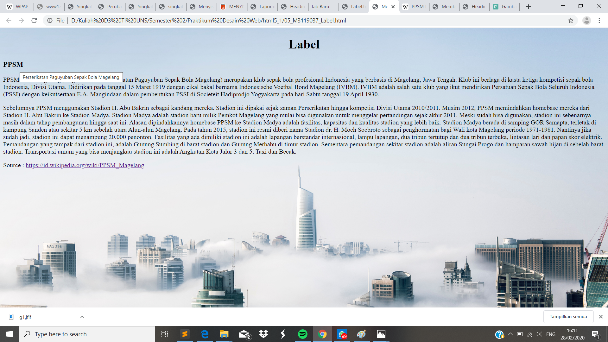

Membuat Label
//Pada percobaan kali ini kita akan membuat Label. Label kali ini berfungsi sebagai efek tool tip browser yang akan muncul ketika kursor diletakkan pada label yang dituju.
Codingan
<!DOCTYPE html>
<html>
<head>
<meta charset="UTF-8">
<title> Membuat Label </title>
</head>
<body style ="background:url(arc.jpg); background-repeat: no-repeat; background-size: cover;">
<h1 style="text-align:center;"> Label</h1>
<h3 title=" Perserikatan Paguyuban Sepak Bola Magelang ">PPSM</h3>
<p>
PPSM Sakti Magelang (singkatan dari Perserikatan Paguyuban Sepak Bola Magelang) merupakan klub sepak bola profesional Indonesia yang berbasis di Magelang, Jawa Tengah. Klub ini berlaga di kasra ketiga kompetensi sepak bola Indonesia, Divisi Utama. Didirikan pada tanggal 15 Maret 1919 dengan cikal bakal bernama Indonesische Voetbal Bond Magelang (IVBM). IVBM adalah salah satu klub yang ikut mendirikan Persatuan Sepak Bola Seluruh Indonesia (PSSI) dengan keikutsertaan E.A Magindaan dalam pembentukan PSSI di Socienteit Hadiprodjo Yogyakarta pada Sabtu tanggal 19 April 1930.
</p>
<br />
<br />
<p>
Sebelumnya PPSM menggunakan Stadion H. Abu Bakrin sebagai kandang mereka. Stadion ini dipakai sejak zaman Perserikatan hingga kompetisi Divisi Utama 2010/2011. Musim 2012, PPSM memindahkan homebase mereka dari Stadion H. Abu Bakrin ke Stadion Madya. Stadion Madya adalah stadion baru milik Pemkot Magelang yang mulai bisa digunakan untuk menggelar pertandingan sejak akhir 2011. Meski sudah bisa digunakan, stadion ini sebenarnya masih dalam tahap pembangunan hingga saat ini. Alasan dipindahkannya homebase PPSM ke Stadion Madya adalah fasilitas, kapasitas dan kualitas stadion yang lebih baik. Stadion Madya berada di samping GOR Samapta, terletak di kampung Sanden atau sekitar 5 km sebelah utara Alun-alun Magelang. Pada tahun 2015, stadion ini resmi diberi nama Stadion dr. H. Moch Soebroto sebagai penghormatan bagi Wali kota Magelang periode 1971-1981. Nantinya jika sudah jadi, stadion ini dapat menampung 20.000 penonton. Fasilitas yang ada dimiliki stadion ini adalah lapangan berstandar internasional, lampu lapangan, dua tribun tertutup dan dua tribun terbuka, lintasan lari dan papan skor elektrik. Pemandangan yang tampak dari stadion ini, adalah Gunung Sumbing di barat stadion dan Gunung Merbabu di timur stadion. Sementara pemandangan sekitar stadion adalah aliran Sungai Progo dan hamparan sawah hijau di sebelah barat stadion. Transportasi umum yang bisa menjangkau stadion ini adalah Angkutan Kota Jalur 3 dan 5, Taxi dan Becak.
<p> Source : <a href="https://id.wikipedia.org/wiki/PPSM_Magelang"> https://id.wikipedia.org/wiki/PPSM_Magelang</a> </p>
</body>
Tampilan Hasil Percobaan

Kesimpulan
Pada percobaan pemberian label ini jika kursor didekatkan pada tulisan PPSM , maka akan muncul tulisan Paguyuban Perserikatan Sepak Bola Magelang.